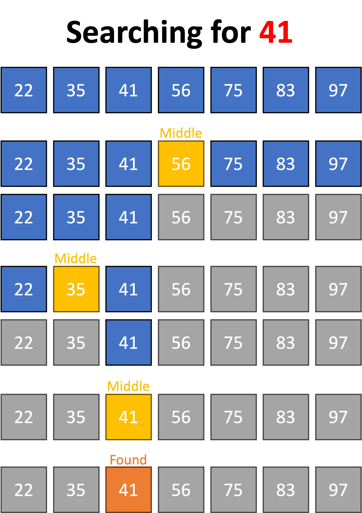

Binary search is a more efficient searching algorithm which only works on sorted lists.
Binary search is a more efficient searching algorithm which only works on sorted lists.
Diagram 1 shows an example run of binary search on a list of numbers.
 Diagram 1
Diagram 1

The steps to do a binary search are as follows:
1. Look at the middle item in your list
2. Check if this is the item that you are looking for
3. If it is, output the index and exit
4. Otherwise, check whether the item you're looking for is bigger or smaller than the middle item
5. If it's bigger, repeat the process with the second half of the list
6. If it's smaller, repeat the process with the first half of your list
7. Keep repeating until you find the item or the list has just one element
Example 1 shows an implementation of binary search in pseudo-code.
 Example 1
Example 1
SUBROUTINE binarySearch(list, item)
left ← 0
right ← LEN(list) - 1
WHILE left ≤ right
middle ← (left + right) / 2
IF list[middle] = item THEN
RETURN middle
ELSE IF list[middle] > item THEN
right ← middle - 1
ELSE
left ← middle + 1
ENDIF
ENDWHILE
RETURN -1
ENDSUBROUTINE
 What is the maximum number of comparisons binary search would need to do for a list of length
What is the maximum number of comparisons binary search would need to do for a list of length n?
⌈log2n⌉ comparisons (if the item isn't in the list). This means that the worst-case time complexity of binary search is O(log n).